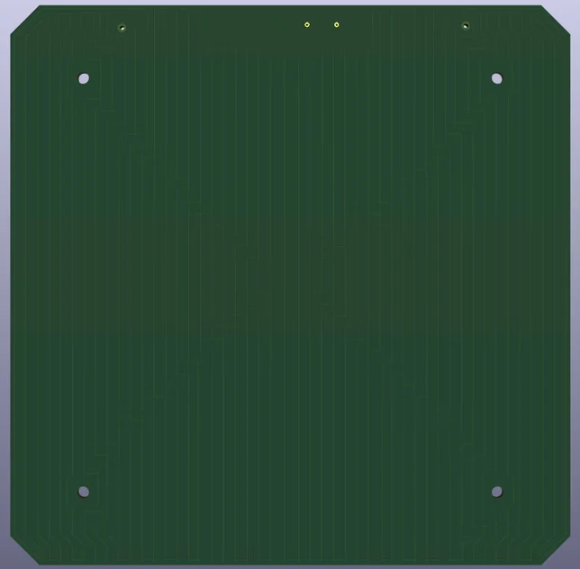
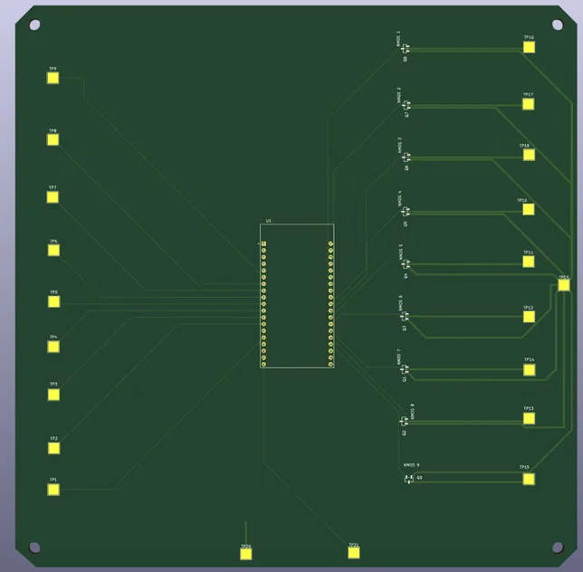
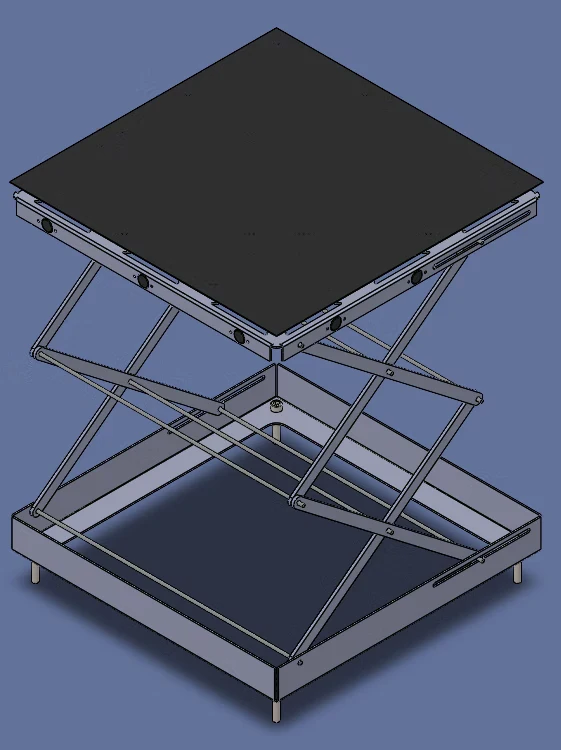

My contribution
I joined the SiDi Lab project midway through development at The University of Texas at Austin, under the supervision of Dr. Sha. The team had already developed the design. I helped manufacture parts and assemble the prototype, turning the lab’s design into hardware for the robotic printing setup.
Research goal
The lab paired a Universal Robots UR5e arm configured for 3D printing with a swappable heated bed. Raising and lowering the build surface relative to the arm was intended to expand the heights at which the toolhead could reach it. The broader swarm manufacturing research goal was to test how repositionable build surfaces could extend the usable workspace beyond a single fixed print bed.
Heated print surface
The team designed the heated surface around an array of custom resistive PCBs. Distributing the heaters across the surface was intended to make heating more uniform and improve first-layer adhesion. After printing, integrated fans were intended to cool the bed more quickly and help finished parts release from the surface.




Scissor lift and actuation
A NEMA 24 motor and ball screw actuated the scissor linkage. The linkage was designed to raise the bed above the arm’s base and lower it near floor level. Moving the surface relative to the arm gave the setup a way to change the print height. The lowered position also supported the planned fan-assisted cooldown and part-release cycle.

